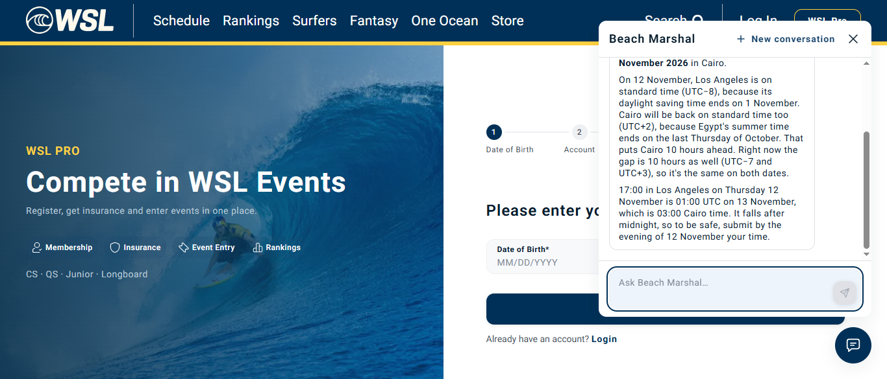
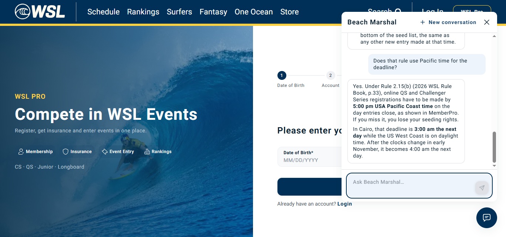

Flow in simple steps
- Use the Public session and open Beach Marshal.
- Continue the recorded preceding conversation.
- Send: Does that rule use Pacific time for the deadline?
- Observe the answer/tool result and compare it with the captured reference evidence.
What went wrong
The assistant gave the wrong Cairo time after the November clock change: 04:00 instead of 03:00.
AWS logs and investigation
Answer error confirmed; internal model reasoning unavailable
The assistant supplied 04:00 Cairo for the November deadline; the date-specific timezone oracle gives 03:00. No conversion tool was called in this follow-up. Model transport succeeded; this is an unsupported date/DST conversion in the answer.
Suggested fix: Calculate conversions with IANA time zones for the actual event date; do not infer a constant offset.
{
"runIds": [
"ed483c45-cfaf-4726-9217-87cc7966f712"
],
"correlationIds": [
"64d4c1f3-c292-472c-bfa7-d00d5fb3c266"
],
"logs": [
{
"time": "2026-10-15T00:15:16.341249554Z",
"namespace": "ai",
"container": "api",
"ts": "2026-10-15T00:15:16+0000",
"level": "INFO",
"logger": "httpx2",
"msg": "HTTP Request: POST https://bedrock-runtime.us-west-2.amazonaws.com/model/us.anthropic.claude-opus-5-5/invoke-with-response-stream \"HTTP/1.1 200 OK\"",
"service": "ai",
"correlation_id": "64d4c1f3-c292-472c-bfa7-d00d5fb3c266",
"run_id": "ed483c45-cfaf-4726-9217-87cc7966f712"
}
]
}Example 2 — PASS
Original example: FAIL; its original evidence is retained below.
Alternate flow: For an entry deadline of 17:00 America/Los_Angeles on 12 November 2026, what are the exact date and time in Africa/Cairo? Use the time-zone rules for that date.
Expected: 17:00 America/Los_Angeles on 12 November 2026 converts to 03:00 Africa/Cairo on 13 November 2026.
Observed: Correct date-specific conversion: 03:00 on 13 November. Original unsolicited wrong conversion remains recorded; this explicitly dated example did not reproduce it.
Exact answer: That deadline is **03:00 on Friday 13 November 2026** in Cairo.
On 12 November, Los Angeles is on standard time (UTC−8), because its daylight saving time ends on 1 November. Cairo will be back on standard time too (UTC+2), because Egypt's summer time ends on the last Thursday of October. That puts Cairo 10 hours ahead. Right now the gap is 10 hours as well (UTC−7 and UTC+3), so it's the same on both dates.
17:00 in Los Angeles on Thursday 12 November is 01:00 UTC on 13 November, which is 03:00 Cairo time. It falls after midnight, so to be safe, submit by the evening of 12 November your time.
Alternate example recording and API evidence

Alternate example captured with Chrome DevTools Protocol Page.startScreencast at the native browser viewport; no zoom, scaling or crop. Focused clip of this request and observed result.
Full sanitized action log and API evidence{
"api": {
"status": 200,
"endpoint": "https://api.dev.worldsurfleague.com/api/assistant/run",
"input": {
"threadId": "46dcbe9e-c748-42ba-99a5-2296b68ec5dd",
"runId": "cc856d1f-6e0b-49b2-9a40-b233bdafda99",
"state": {},
"messages": [
{
"id": "63f824ab-0bbf-4f20-b2b6-81e10677d10a",
"role": "user",
"content": "For an entry deadline of 17:00 America/Los_Angeles on 12 November 2026, what are the exact date and time in Africa/Cairo? Use the time-zone rules for that date."
}
],
"tools": [],
"context": [],
"forwardedProps": {}
}
},
"runIds": [
{
"type": "RUN_STARTED",
"threadId": "46dcbe9e-c748-42ba-99a5-2296b68ec5dd",
"runId": "cc856d1f-6e0b-49b2-9a40-b233bdafda99"
},
{
"type": "RUN_FINISHED",
"threadId": "46dcbe9e-c748-42ba-99a5-2296b68ec5dd",
"runId": "cc856d1f-6e0b-49b2-9a40-b233bdafda99"
}
],
"tools": [],
"reference": []
}AWS investigation above belongs to the original run; this alternate run has new IDs and has not been matched to those old logs.
What happened
Pacific deadline is correct, but the unsolicited claim that Cairo becomes04:00 after the early-November change is incorrect: 17:00 Los Angeles on5 November2026 is03:00 Cairo on6 November, according to the recorded Intl timezone oracle.
Steps to reproduce
- Use normal application role/session.
- Open Beach Marshal.
- Continue the preceding conversation.
- Send the exact recorded prompt.
- Wait for the real stream and capture answer, tools and UI.
Exact prompt: Does that rule use Pacific time for the deadline?
Expected result
Follow-up grounded in Rule2.15: 17:00 US Pacific on closing date. No unsupported fixed-date conversion.
Actual result
Yes. Under Rule 2.15(b) (2026 WSL Rule Book, p.33), online QS and Challenger Series registrations have to be made by **5:00 pm USA Pacific Coast time** on the day entries close, as shown in MemberPro. If you miss it, you lose your seeding rights.
In Cairo, that deadline is **3:00 am the next day** while the US West Coast is on daylight time. After the clocks change in early November, it becomes 4:00 am the next day.
What needs attention
Answer generation added a fact not supported by the captured source. Validate deterministic counts and date-specific timezone conversion before presenting them.
Root-cause status: investigation finding/hypothesis, not a proven deployed-code diagnosis.
AWS investigation
Answer error confirmed; internal model reasoning unavailable
The assistant supplied 04:00 Cairo for the November deadline; the date-specific timezone oracle gives 03:00. No conversion tool was called in this follow-up. Model transport succeeded; this is an unsupported date/DST conversion in the answer.
Suggested fix: Calculate conversions with IANA time zones for the actual event date; do not infer a constant offset.
Exact AWS logs and correlation evidence
Technical details
Dev · 2026-10-15T00:15:13.636Z
{
"api": {
"method": "POST",
"endpoint": "https://api.dev.worldsurfleague.com/api/assistant/run",
"status": 200,
"correlationId": "64d4c1f3-c292-472c-bfa7-d00d5fb3c266",
"input": {
"threadId": "1a4c54c2-9008-471f-80b4-6defc490ea6d",
"runId": "ed483c45-cfaf-4726-9217-87cc7966f712",
"state": {},
"messages": [
{
"id": "27e7827f-2e6f-487b-afed-76bc00a05e96",
"role": "user",
"content": "What is Rule 2.15 in the 2026 WSL Rule Book? Give its title, page and the payment-decline rule."
},
{
"id": "lc_run--01a13ce9-a5d8-7211-a5ef-185a2a60d853",
"role": "assistant",
"toolCalls": [
{
"id": "toolu_bdrk_01AGvvcFaw3DD2iABmiAnhrN",
"type": "function",
"function": {
"name": "get_rule",
"arguments": "{\"number\": \"2.15\"}"
}
}
]
},
{
"id": "toolu_bdrk_01AGvvcFaw3DD2iABmiAnhrN",
"role": "tool",
"toolCallId": "toolu_bdrk_01AGvvcFaw3DD2iABmiAnhrN",
"content": "{\"status\":\"ok\",\"rule\":{\"number\":\"2.15\",\"title\":\"Event Registration and Entry Procedure\",\"page\":33,\"text\":\"(a) Registration for all QS/Challenger Series Events must be done online through MemberPro unless there are extenuating circumstances that do not allow for the Surfer to do so, in which case the Surfer should contact your WSL Regional Office immediately. Regional Office Contact information is available on the Competitor Services page of the WSL website.\\n(b) All online QS/Challenger Event registrations must be made by 5:00 pm USA Pacific Coast time on the date the Event entries close (as reflected in MemberPro) to maintain seeding rights.\\n(c) If an Entry Fee payment is declined, the Surfer will be sent an email notification and given seven (7) days to rectify the problem. After seven (7) days, if no payment is received, the Surfer will be removed from the entry and seed list for the QS/Challenger Series Event. If the Surfer subsequently re-enters the QS/Challenger Series Event, they will be placed at the bottom of the seed list as any other new entries would be at the time of successful entry to the QS/Challenger Series Event.\\n(d) Where a Surfer enters multiple QS/Challenger Series Events whose Event Windows overlap, the Surfer will be entered into the higher rated QS/Challenger Series Event. If the QS/Challenger Series Events have the same rating, the Surfer will be contacted as soon as possible, and the Surfer will have seven (7) days to respond with a choice of which QS/Challenger Series Event to enter. Should the Surfer not respond within seven (7) days, only the entry for the QS/Challenger Series Event that the Surfer entered first as indicated by MemberPro will be confirmed.\\n(e) Entry payments received after the closing date and prior to the Event Start Date will be treated on a first come first served basis until the QS/Challenger Series Event is full.\\n(f) Event organizers cannot accept any entries and must refer the Surfers to MemberPro.\\n(g) Beach entries must be made with the WSL Regional Representative at the Event Site and any Surfers who submit a beach entry will be placed on the Alternate list. For additional information, please refer to Rule 2.23.\"}}"
},
{
"id": "lc_run--01a13ce9-abec-7491-ae0c-3dfd7f18590f",
"role": "assistant",
"content": "Rule 2.15 is called \"Event Registration and Entry Procedure\" and is on page 33 of the 2026 WSL Rule Book. Here's what it says about declined payments in part (c):\n\n- If your Entry Fee payment is declined, you'll get an email and have seven days to fix it.\n- If no payment arrives within those seven days, you're taken off the entry and seed list for that QS or Challenger Series event.\n- If you enter again later, you go to the bottom of the seed list, the same as any other new entry made at that time."
},
{
"id": "2f947080-1a8c-444d-9d4f-7be192943244",
"role": "user",
"content": "Does that rule use Pacific time for the deadline?"
}
],
"tools": [],
"context": [],
"forwardedProps": {}
}
},
"runIds": [
{
"type": "RUN_STARTED",
"threadId": "1a4c54c2-9008-471f-80b4-6defc490ea6d",
"runId": "ed483c45-cfaf-4726-9217-87cc7966f712"
},
{
"type": "RUN_FINISHED",
"threadId": "1a4c54c2-9008-471f-80b4-6defc490ea6d",
"runId": "ed483c45-cfaf-4726-9217-87cc7966f712"
}
],
"tools": [],
"backend": []
}Evidence

Focused original browser-content viewport, no zoom, resize or crop. Chrome toolbar/OS tabs are not recorded by Playwright. Clip includes the actual sent prompt and observed result.
Full sanitized action log and API evidence